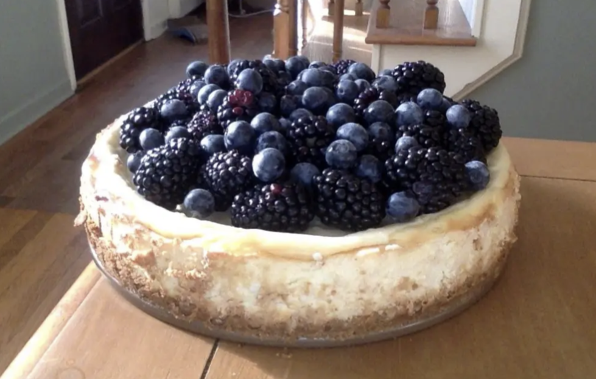

Cheesecake

This is the best cheesecake you will ever have!
Servings: 10-12
Time: 6 hours
Ingredients
- 1/2 cup graham cracker crumbs
- 1/2 stick butter
- 4 packages cream cheese
- 2 eggs
- 1/2 teaspoon vanilla extract
- 1/2 teaspoon salt
- 3/4 cup sugar
- 1/2 cup blueberries
- 1/2 cup blackberries
Steps
- Preheat the oven to 400 degrees.
- Melt the butter and add it to the graham crackers.
- Form a layer of this mixture at the bottom of a springform pan.
- In a new bowl mix the cream cheese, eggs, vanilla extract,sugar and salt.
- Pour the cream cheese mixture into the springform pan.
- Cook for 45 minutes.
- Remove the cheesecake from the oven and let it cool for 1 hour.
- Place the cheesecake in the fridge and refrigerate for 4 hours.
- When ready to serve top with blueberries and blackberries.
- Enjoy!
Home